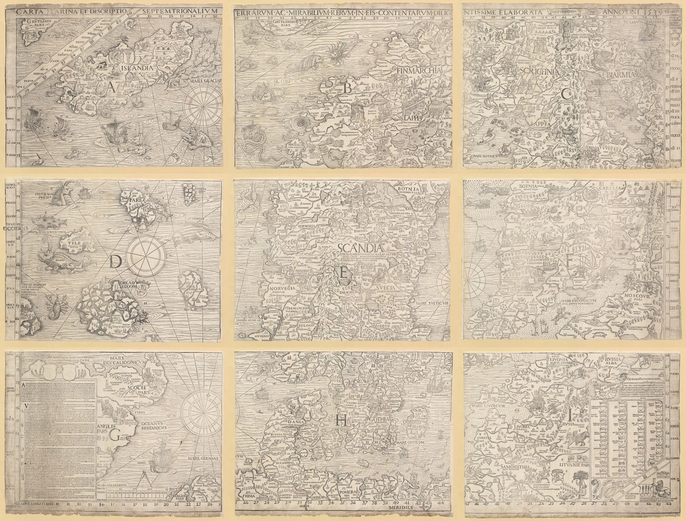

Carta Marina (the nine sheets)
Olaus Magnus · 1539 · Woodcut on paper, one of nine sheets · 56 × 41 cm (sheet); 170 × 125 cm (whole map) · Bayerische Staatsbibliothek, Munich
Free to use
The map is printed on nine woodcut sheets, shown here side by side; joined, they measure 170 by 125 centimetres. Olaus Magnus worked on it in Rome for twelve years, from 1527 to 1539, after his banishment from Sweden, and the first copies were printed in Venice. Every copy then passed out of public knowledge after 1574, and it was later doubted that the map had ever existed. Oscar Brenner found this copy in the Munich library in 1886. The only other known copy of the first edition is in Uppsala.